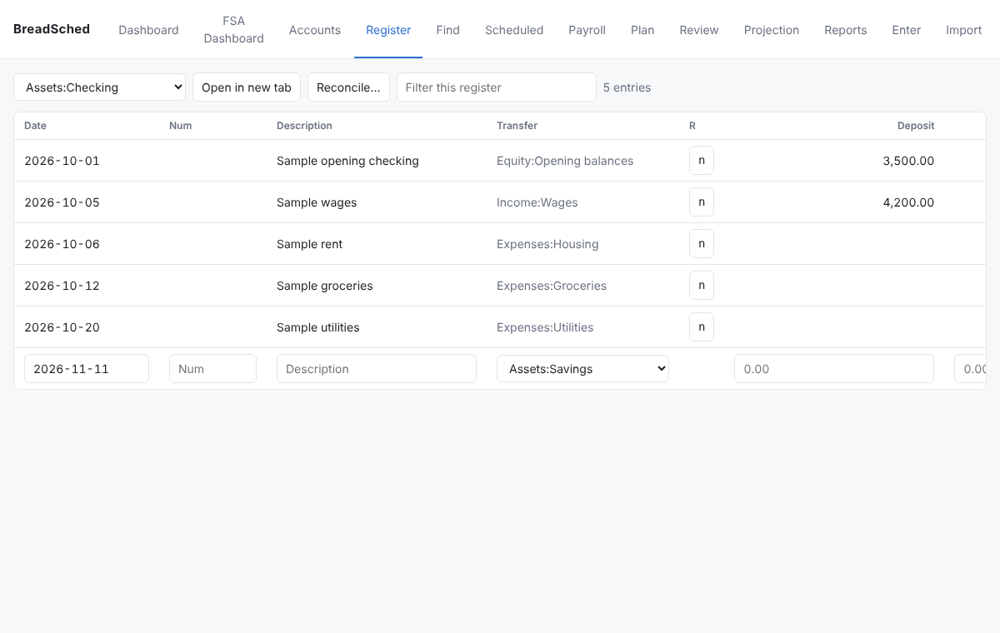
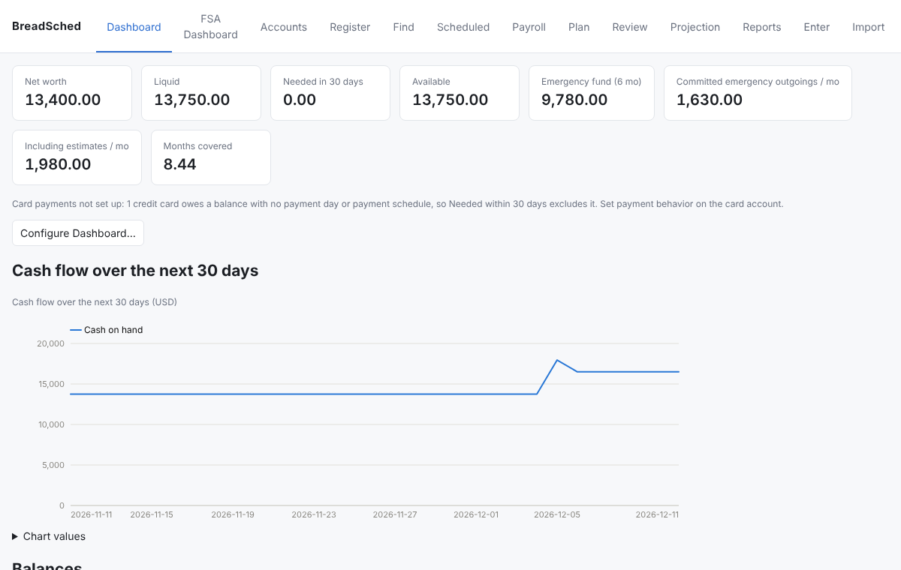
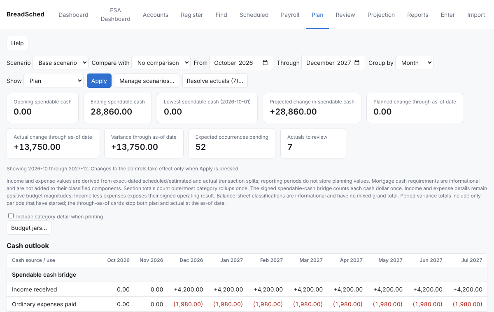
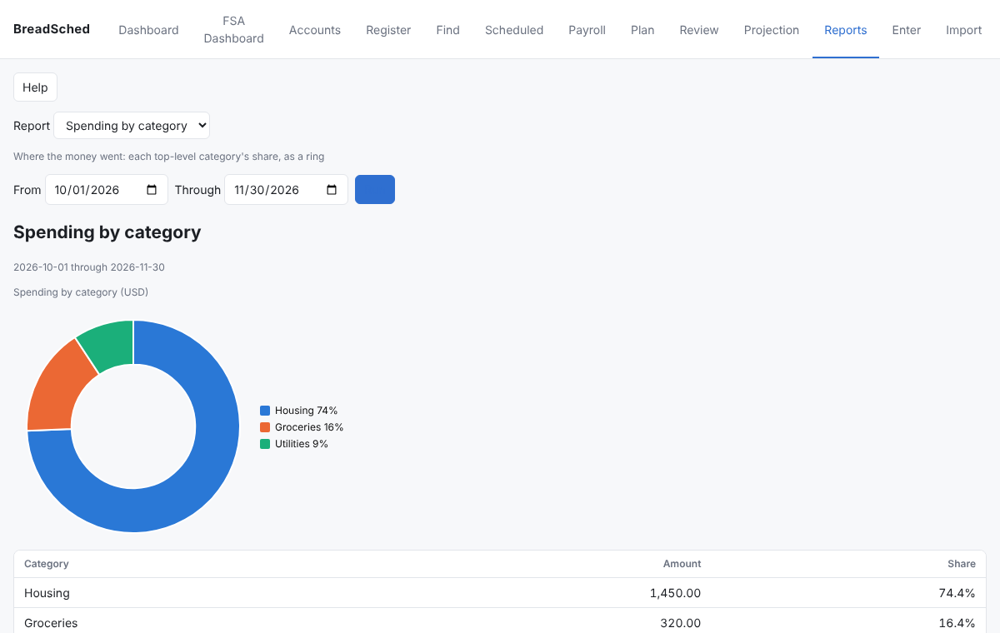
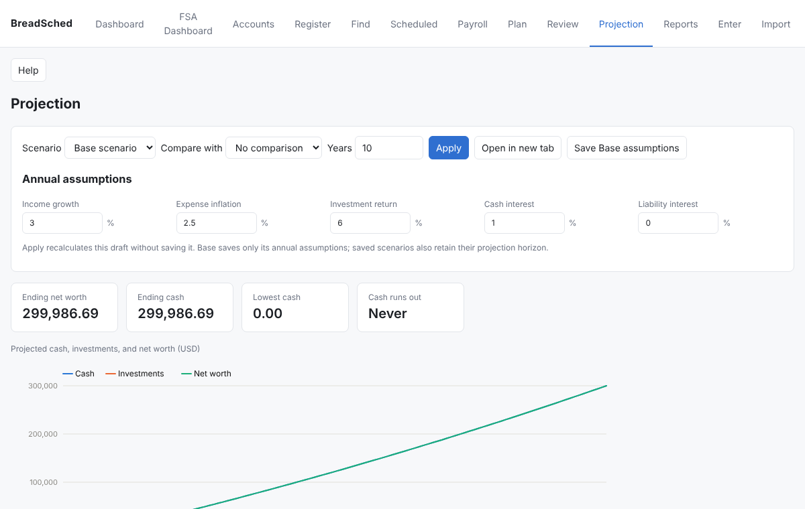

BreadSched
BreadSchedUse what you want.
Your money, one step at a time.
BreadSched is a free, open-source household finance application for your computer. Start by keeping your bank and credit-card accounts straight. When you are ready, see the cash you will have next week, then budget, then learn where the money goes, then plan years ahead. Every step is optional, and none of them needs the next.
Five steps, take as many as you like
Most money software asks you to set everything up before it helps. BreadSched is useful from the first account, and each later step builds on what you already entered, so nothing is wasted if you stop.
- Day one
Keep your bank and card accounts straight
Add a checking account and a credit card, or bring your history with you: BreadSched imports GnuCash books, Quicken QIF, bank OFX/QFX downloads and CSV statements, and a later import picks up where the last one stopped.
- A register for each account that reads like your statement, with shortcuts for dates and amounts and arithmetic in the amount column.
- Reconcile against the statement so you know the balance is right.
- Rules that categorize imported transactions the way you would.

- When you want fewer surprises
See the cash you will have
Enter the things that happen on a date: rent, the car payment, each paycheck. The Dashboard then shows the cash you will have on hand each day of the coming month, marks the lowest day, and tells you what is due before you are paid again.
- Scheduled bills and pay, with paycheck splits for taxes and savings.
- A review of what came due, so nothing is entered twice or forgotten.
- Credit-card payments and loans that follow their own rules.

- When you want a budget
Budget with jars
Groceries and fuel do not arrive on a date, but you can still plan for them. An estimate says roughly how much a category takes and how often. Each bill, estimate and savings goal is a jar: every paycheck fills it a little, and spending draws it down. The Plan compares what you planned with what actually happened, month by month.
- Estimates suggested from your own history.
- Planned against actual for any range, by month, quarter or year.
- Budget jars that show what each one holds today.

- When you want to understand
See where the money goes
Reports turn the record into pictures: a ring of where the money went, income beside spending each month, net worth over time. Every chart has the exact numbers beside it, and every report prints.
- Spending by category, income and spending, net worth over time.
- Explore any category down to the merchants and transactions in it.
- Tax-year totals and realized gains for investments.

- When you want to plan ahead
Everything else, when you need it
The same book grows with you. Project your finances years ahead and compare what-if scenarios: a new job, an extra mortgage payment, retiring early.
- Mortgages and loans with their escrow and amortization.
- Savings goals that set money aside toward a date.
- FSA claims and benefit years, and reimbursable expenses.
- Investments at market value, cost basis and lots, retirement drawdown.

Yours, and your household's
On your computer
A book is one file you keep. No account to sign up for, no bank passwords handed to a service, no subscription.
Desktop, browser, command line
The Linux and Windows desktop app, a browser interface (phones too), and a command line all work on the same book.
Shared with your household
Share a book with family members, each signed in with their own role: owner, editor, viewer, or entry only.
Side by side with GnuCash
Keep using GnuCash for the ledger if you like: BreadSched imports it again whenever you want, and can write your changes back.
Exact money
Every amount is exact (no rounding drift), every transaction balances, and foreign currencies are never silently added together.
Free software
Open source under the GNU AGPL. Add your own reports and Dashboard items as breadlets.
Download
BreadSched is in beta: it is used every day, but keep backups (it makes them for you) and read each release's notes.
Windows
A per-user installer with everything it needs
included: BreadSched-<version>-setup.exe.
Linux
A Flatpak bundle, or Debian/Ubuntu and Fedora packages.
Python
Each release's wheel installs with pip
(Python 3.11 or later); the desktop also needs GTK 4 and PyGObject.
Try it without your own data first: breadsched sample
sample.breadsched makes a book of a made-up household to open and explore.